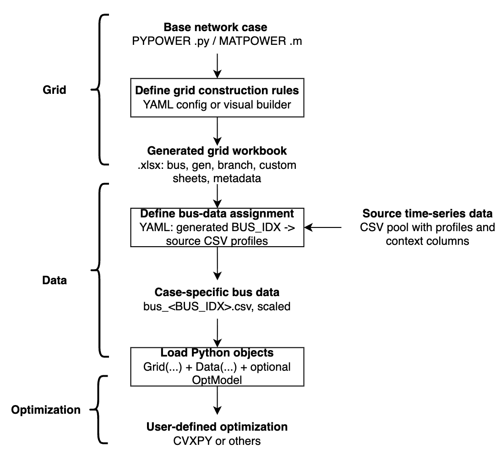

Workflow¶
GridForge turns a base power-system case into optimization-ready Python data in four stages:
1. Static grid construction
User-defined YAML rules + MATPOWER/PYPOWER base case -> Full Excel workbook
2. Time-series assignment
source data pool + assignment config YAML -> case-specific bus_<BUS_IDX>.csv files
3. Python access
Excel workbook -> Grid(...) class instance
case-specific CSVs -> Data(...) class instance
4. Optimization
Grid + Data -> user-defined optimization model in CVXPY or another optimization tool

GridForge also comes with a ready-to-use dataset from TX-123BT system which is a synthetic Texas power system with time-series weather-dependent spatiotemporal profiles.
Note: TX-123BT is optional. It is one example source for producing a pool of per-bus CSV files, not a signal for GridForge itself.
Stage 1: Build The Grid Workbook¶
GridForge starts from a PYPOWER/MATPOWER-style case and applies YAML rules. The YAML file describes static changes: which columns to overwrite, which custom asset sheets to create, where those assets sit in the network, and how totals should be rescaled.
The user should specify the name of a pypower case or a local PYPOWER/MATPOWER-sytle case file in .py or .m format. The user can then modify the grid configuration by adding or modifying grid assets with YAML files.
The YAML can be written manually or created with the Visual Config App.
Once the yaml file is ready, the user can construct the grid configuration by running the following code:
from gridforge.construct import construct_grid_config
construct_grid_config(
"examples/14bus_uc/14bus_config.yaml", # user-defined YAML rules
"examples/14bus_uc/14bus_config.xlsx", # output Excel workbook
random_seed=404,
)
The generated Excel workbook contains core sheets: bus, gen, and branch.
and any custom asset sheets attached to buses, such as:load, solar, wind, storage, etc.
Generator cost data from PYPOWER/MATPOWER gencost is merged into gen as COST_* columns, for example COST_STARTUP, COST_FIRST, and COST_ZERO.
For the full YAML schema, see configuration.md.
Stage 2: Assign Bus Data¶
The grid config decides which assets exist and where they sit. Time-series data is attached later through a separate bus-level assignment file, so static assets do not automatically require CSV data.
Only workbook sheets referenced by signals.<name>.workbook_sheet are treated
as data-backed. For each signal, GridForge reads that sheet's BUS_IDX values
from the Excel workbook to know which generated buses require data.
from gridforge.data import (
load_bus_data_assignment,
prepare_bus_data,
)
assignment_template = load_bus_data_assignment("examples/14bus_uc/14bus_data_assignment.yaml")
assignment, materialized = prepare_bus_data(
grid_xlsx_path="examples/14bus_uc/14bus_config.xlsx",
source_data_dir="data/bus_data",
signals=assignment_template["signals"],
output_data_dir="examples/14bus_uc/14bus_data",
resolved_assignment_path="examples/14bus_uc/14bus_data_assignment_resolved.yaml",
random_seed=404,
)
The template supplies only signals; the source and output directories are
explicit runtime arguments. The generated resolved assignment records both
directories together with the concrete bus-to-CSV mapping.
This reads source data files and writes case-specific files such as:
examples/14bus_uc/14bus_data/bus_2.csv
examples/14bus_uc/14bus_data/bus_3.csv
For assignment schema, scaling rules, and suggested mappings, see bus-data-assignment.md.
Stage 3: Load Grid And Data¶
from gridforge.opt import Grid, Data
grid = Grid(
"examples/14bus_uc/14bus_config.xlsx", # input Excel workbook from Stage 1
verbose=0,
)
data = Data(
grid_xlsx_path="examples/14bus_uc/14bus_config.xlsx", # input Excel workbook from Stage 1
data_dir="examples/14bus_uc/14bus_data", # input directory for case-specific bus_<BUS_IDX>.csv files
sheet_names=["load", "solar", "wind"],
)
Grid(...) exposes the static workbook as arrays, DataFrames, and incidence
matrices:
grid.sheets[...]: raw Excel sheets as pandas DataFramesgrid.core.*: schema-defined core sheetsgrid.custom[...]: generic custom sheets attached to buses- aliases such as
grid.gen,grid.branch,grid.load, andgrid.solar
Data(...) loads time-series matrices aligned to the workbook row order. This
alignment is what lets grid.load.Cbus @ load[t] map a time-series vector to
bus injections correctly.
For detailed access patterns, see grid-data-access.md.
Stage 4: Build An Optimization Model¶
GridForge does not prescribe a fixed optimization model. You can use Grid,
Data, and OptModel to assemble your own formulation in CVXPY or another
optimization tool.
import cvxpy as cp
from gridforge.opt import OptModel
T = 24
m = OptModel(grid)
m.add_variable("pg", (T, grid.gen.n))
m.add_parameter("load", (T, grid.load.n))
pg = m.vars["pg"]
load = m.params["load"]
for t in range(T):
injection = grid.gen.Cbus @ pg[t] - grid.load.Cbus @ load[t]
m.add_constraint([
cp.sum(injection) == 0,
grid.branch.ptdf @ injection <= grid.branch.pmax / grid.baseMVA,
grid.branch.ptdf @ injection >= -grid.branch.pmax / grid.baseMVA,
])
prob = m.compile(load=data.get_series("load")[:T, :] / grid.baseMVA)
The full unit-commitment example is in 14bus_example.py.
Visual Config App¶
The Streamlit app is a visual YAML builder for Stage 1. It edits the same YAML
format used by construct_grid_config(...).
gridforge-app
From a local checkout:
streamlit run gridforge/config_app.py
For installation notes and the boundary between the visual app and bus-data assignment, see visual-app.md.
Optional TX-123BT Source Data¶
GridForge includes an optional TX-123BT workflow that prepares a public source
CSV pool under data/bus_data/.
bash scripts/generate_tx123bt_bus_data.sh
This is not required for GridForge. It is one example data source that can feed the generic bus-data assignment step.
For details, see tx123bt.md.